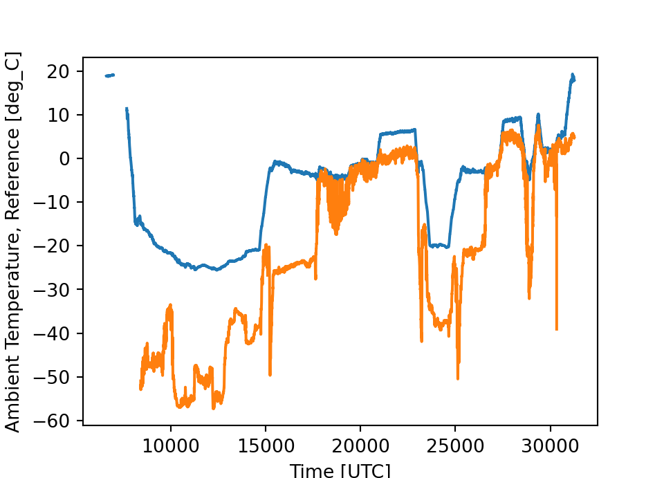
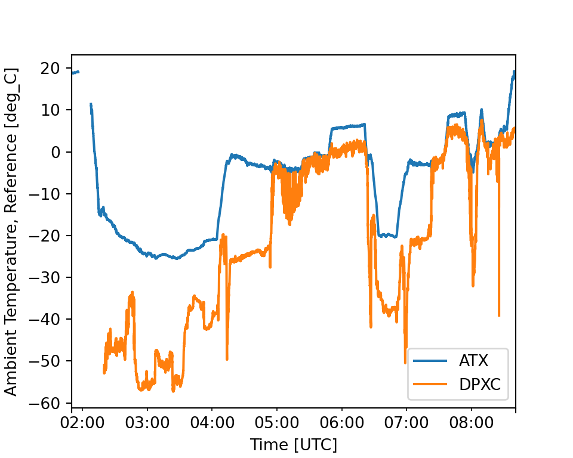

The chunk structure is the same as for R, except that the initial word is “python” (without the quotes) in place of “r”. You still need to include an initial R chunk, like that above in this example, to load the “knitr” library.
Here is Python code chunk to import the matplotlib package:
from matplotlib import pyplot as pltThe matplotlib and netcdf4 packages can be used to generate the plot that appears below the following code:
## This is Python code
from netCDF4 import Dataset, num2date ## num2date is used later
ncDF = Dataset('/scr/raf_data/SOCRATES/SOCRATESrf15.nc')
fig = plt.figure(figsize=(5,3.6))
ax = fig.add_subplot(111)
plt.plot(ncDF["Time"], ncDF["ATX"])
plt.plot(ncDF["Time"], ncDF["DPXC"])
ax.set_xlabel('Time [UTC]')
ax.set_ylabel('%s [%s]' % (ncDF["ATX"].long_name, ncDF["ATX"].units))
plt.show()
The figure needs some additional processing to convert from the present abscissa (an index) to more useful time labels. To address that and also illustrate “pandas” I’ll put this information into a Pandas DataFrame and repeat the plot:
## This is Python code
import pandas as pd
VarList = ['ATX', 'DPXC'] ## Specify the variables to plot
times = ncDF.variables['Time'] ## ncDF was read in the preceding python chunk.
jd = num2date(times[:], times.units, only_use_cftime_datetimes=False) ## Define the index
d = [ncDF.variables[f][:] for f in VarList] ## Load the variables from the netCDF file
PDF = pd.DataFrame(index=jd) ## define an empty DataFrame with only an index
for i in range(len(VarList)): ## Add the variables to the pandas DataFrame
PDF[VarList[i]] = pd.DataFrame(d[i][:], index=jd)
tunits = times.units ## saved for later use
ax = PDF.plot(figsize=(5,4))
## Make some cosmetic modifications to the axis labels:
d0 = ncDF.variables[VarList[0]] ## Get the attributes for the first variable
ax.set_ylabel('%s [%s]' % (d0.long_name, d0.units))
ax.set_xlabel('Time [UTC]')
plt.show()
PDF2R = PDF ## Save a modified version for later use in R
PDF2R['Time'] = jd ## Add the "Time" variable for use in R.
Here the “num2date” function from netCDF4 produces better-labeled times, and the last argument to num2date produces labels with time only instead of date-time.